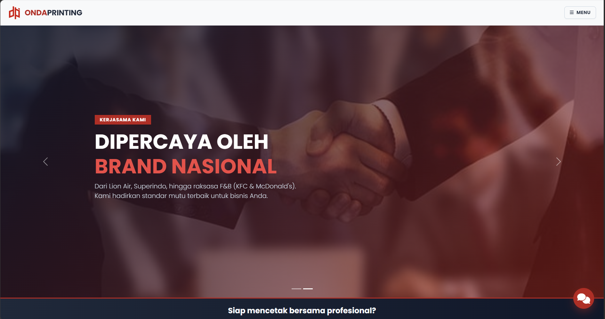
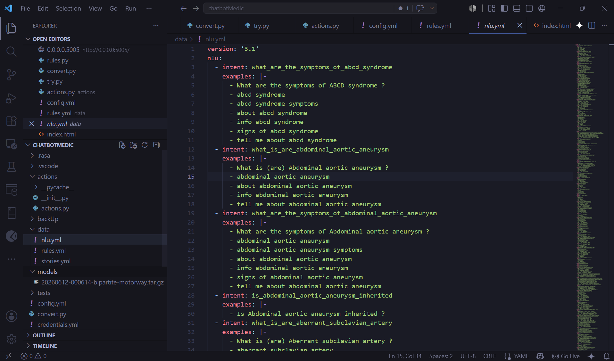

Proyek ini adalah pengembangan sistem chatbot medis dengan domain tertutup (closed-domain) yang dirancang untuk menjawab berbagai pertanyaan terkait penyakit secara otomatis dan interaktif. Sistem ini dibangun menggunakan Rasa Framework dengan fokus utama pada penerapan Natural Language Understanding (NLU) untuk secara akurat mengklasifikasikan maksud (intent) dan mengekstrak entitas (entity) dari kalimat pengguna.
Dataset yang digunakan bersumber dari MedQuAD (Medical Question Answering Dataset), yang berisi puluhan ribu pasangan tanya-jawab medis dari situs resmi National Institutes of Health (NIH) Amerika Serikat.

Detail project: